结论先行：指数高开低走、尾盘跳水，收盘几乎平盘；15 分钟下跌中枢下沿在收盘时被跌破，定性仍为弱势。总仓位上限 4 成、不追涨。中线 4 只、短线 5 只全部不给买点，其中江波龙、华策影视被直接剔除跟踪。可验证的主线是AI 视频 / 传媒 + 人形机器人（涨停池里机器人与端侧 AI 占多数，算力硬件 0 家）；AI 视频 15 分钟中枢逐级上移但力度已衰减（顶背驰要素具备）。另附老师布置的作业题：万兴科技 vs 中文在线二选一纳入跟踪。
实测：上证 +0.08% 收 3663.72（开 3682.04 / 高 3683.73 / 低 3660.72），深成指 +0.86%，创业板指 +1.46%，沪深300 +0.07%。走势形态与老师描述的「高开后震荡下行、走势比较沉闷」完全一致：上证最高点就是开盘那一分钟（3683.73），全天从 +0.58% 一路回落，收盘几乎平盘且贴近日内最低。
两市成交额 15048.1 亿（沪 6739.5 亿 + 深 8308.6 亿），较前一日 14826.3 亿微增 1.5%。但这是结构分化：沪市 6825.3 → 6739.5 亿（缩量），深市 8001.0 → 8308.6 亿（放量）—— 钱去了成长与题材，权重端没有承接。
涨跌家数 4273 / 1149（平 151），个股涨跌幅中位数 1.313%，涨停 93 家、跌停 0 家。赚钱效应明显好于昨日（11/09 为 2242 涨 / 3148 跌），但老师仍给「市场温度 25 度」—— 老师看的是结构（热点高度、连板质量）而非数量，本纪要在偏差表中记录这一差异。
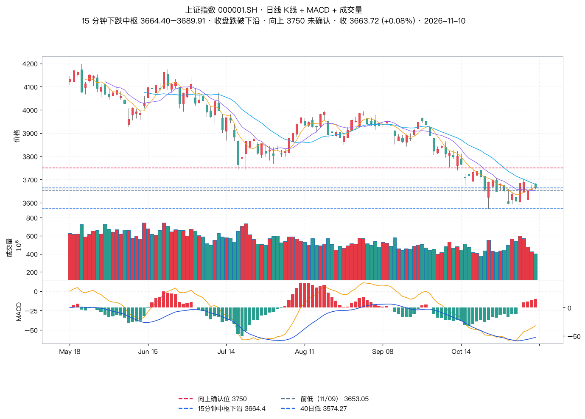
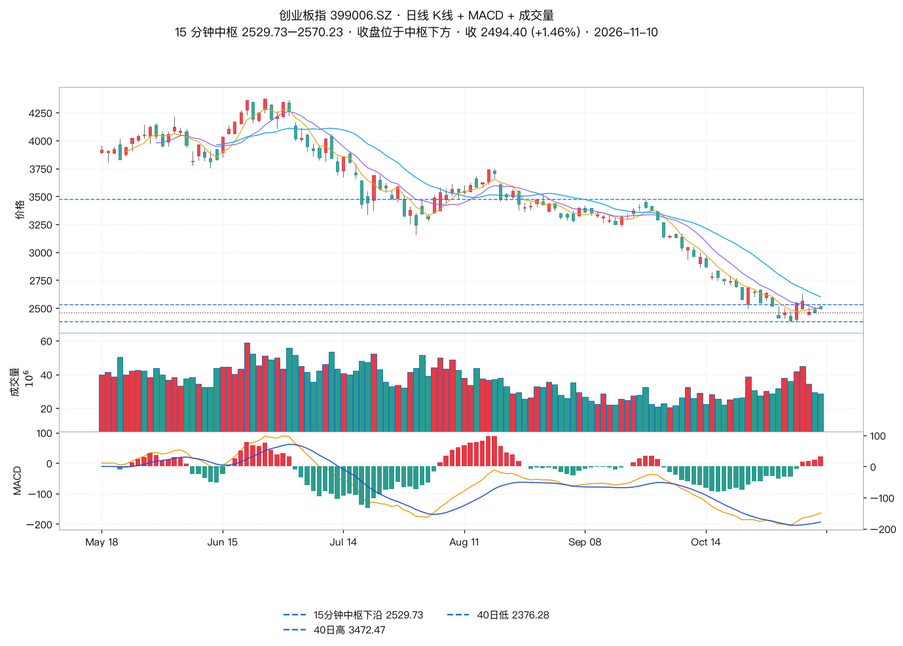
11/10 老师除收评外还给出三档盘中快评，本纪要一并核验（这是本期新增内容源）。
| 时点 | 老师判据 | 实测 | 判定 |
|---|---|---|---|
| 10:00 | 受外围影响明显高开，后震荡下行；上证仍未突破 3750，不能说止跌企稳，先当超跌反弹看；预估成交额 1.5 万亿 | 高开：创业板 +2.44%、科创50 +2.37%；三指数最高点都在 09:30 那一分钟；3750 未触（最高 3683.73）；早盘至 10:30 成交 7208 亿（同比 -4.9%） | 一致 |
| 10:00 | 算力高开震荡下行；AI 应用 / AI 短剧 / 游戏 / 传媒强势且有持续性 | CPO 开 +3.20%→现 +2.77%（回落 0.69pp）、算力租赁回落 0.34pp；短剧互动游戏 +5.48%、传媒 +4.53%、AI 视频 +4.60% | 一致 |
| 14:00 | 午后继续震荡；没有对 3750 形成 1 分钟三买之前不急于提高仓位；量能还没有有效恢复 | 午后 1 分钟中枢仅 3664.99–3668.01、摆幅约 1 点；3750 从未触及，三买前提位置不存在；至 14:15 成交 12629 亿（同比 -0.3%），收盘 15049 亿（同比 +1.5%） | 一致量能口径需分 |
| 14:00 | 算力午后出现资金回流，特别是端侧 AI；端侧 AI 前期抗跌，今天再次异动 | 算力概念午盘 +1.81%→收 +2.60%；AI 眼镜 +4.55%、消费电子 +4.28%、AIPC +3.32%、智能音箱 +6.11%；11/09 AI 眼镜 +0.85%（同日传媒 -0.51%、光伏 -2.22%） | 一致 |
| 午评 | 宇树科技「昨天高点 760 元」，今日回拉若低于 760 即短期高点 | 688836 11/09 高 759.99；11/10 开 739（开盘即低于 760）、最高 809、收 749.5 —— 判据当日盘中已触发 | 分毫不差 |
| 午评 | 瑞芯微上午冲高回落，存在上不去拉回来继续震荡的概率 | 15 分钟：10:15 高 230.00 → 11:30 低 221.22（上午确实回落）；下午 13:30 反手封 233.20 涨停 | 上午一致，下午反超 |
| 午评 | 药明康德未完成对 151 元的修复；华策影视两度封板没封住；云铝今天走势直接向下 | 药明康德上午 15 分钟收盘全部收在 151 附近、下午一度站上 151.78 又回落；华策最高 11.64 = 涨停价未封住；云铝开 25.00 收 23.72（-4.62%） | 一致 |
| 板块 | 涨跌幅 | 涨/跌家数 | 成交额 | 主力净流入 |
|---|---|---|---|---|
| 光伏设备 | +1.44% | 47 / 18 | 318.9 亿 | +3.12 亿 |
| 光伏主材 | +0.33% | 1 / 1 | 14.8 亿 | +0.57 亿 |
| 光伏辅材 | +1.81% | 14 / 5 | 47.7 亿 | -0.18 亿 |
| 光伏电池组件 | +1.71% | 13 / 6 | 107.3 亿 | +1.03 亿 |
| 光伏发电 | +2.03% | 10 / 3 | 25.1 亿 | +0.12 亿 |
| 光伏加工设备 | +1.02% | 9 / 2 | 54.4 亿 | +0.46 亿 |
| 板块 | 涨跌幅 | 涨/跌家数 | 成交额 | 主力净流入 |
|---|---|---|---|---|
| 通用设备 | +2.52% | 235 / 21 | 602.8 亿 | +18.40 亿 |
| 专用设备 | +2.08% | 182 / 24 | 306.9 亿 | +6.91 亿 |
| 汽车零部件 | +2.56% | 252 / 25 | 547.7 亿 | +20.02 亿 |
| 自动化设备 | +3.47% | 91 / 5 | 398.5 亿 | +8.08 亿 |
| 消费电子零部件及组装 | +4.44% | 87 / 1 | 482.2 亿 | +21.37 亿 |
| 影视院线 | +7.05% | 17 / 1 | 180.7 亿 | +14.65 亿 |
| 广告营销 | +4.40% | 30 / 0 | 205.3 亿 | +14.29 亿 |
| 数字媒体 | +4.84% | 14 / 1 | 205.8 亿 | +13.80 亿 |
| 出版 | +3.43% | 26 / 2 | 108.8 亿 | +0.94 亿 |
| 概念板块 | 涨跌幅 | 涨/跌家数 | 成交额 | 主力净流入 |
|---|---|---|---|---|
| 人形机器人 | +3.70% | 315 / 16 | 1792.5 亿 | +57.70 亿 |
| 机器人概念 | +2.92% | 736 / 82 | 3021.4 亿 | +94.63 亿 |
| 机器人执行器 | +3.28% | 39 / 1 | 282.3 亿 | +9.84 亿 |
| 传媒 | +4.53% | 123 / 5 | 872.0 亿 | +46.88 亿 |
| 影视概念 | +5.03% | 61 / 3 | 436.8 亿 | +20.55 亿 |
| 短剧互动游戏 | +5.48% | 47 / 3 | 514.4 亿 | +31.65 亿 |
| AI视频 | +4.60% | 26 / 2 | 395.2 亿 | +14.46 亿 |
| AI语料 | +4.54% | 37 / 1 | 379.7 亿 | +23.66 亿 |
| 15 分钟中枢序列（czsc 独立复算） | 区间 | 时间 |
|---|---|---|
| 中枢 1 | 956.47–1002.72 | 11-05 13:45 → 11-09 10:15 |
| 中枢 2 | 987.64–1002.72 | 11-06 09:45 → 11-09 13:15 |
| 中枢 3 | 987.64–1033.38 | 11-09 10:15 → 11-10 11:00 |
| 最近三笔 | 方向 | 高 | 低 | 力度 |
|---|---|---|---|---|
| 11-09 10:15 | 向上 | 1033.38 | 956.47 | 76.91 |
| 11-09 13:15 | 向下 | 1033.38 | 987.64 | 45.74 |
| 11-10 11:00 | 向上 | 1042.62 | 987.64 | 54.98 |
| 板块 | 涨跌幅 | 涨/跌家数 | 成交额 | 主力净流入 |
|---|---|---|---|---|
| AI眼镜 | +4.55% | 137 / 6 | 957.2 亿 | +42.59 亿 |
| AI手机 | +3.46% | 28 / 1 | 179.8 亿 | +9.42 亿 |
| AIPC | +3.32% | 62 / 0 | 420.5 亿 | +18.70 亿 |
| 智能穿戴 | +4.03% | 128 / 4 | 988.7 亿 | +45.23 亿 |
| 智能音箱 | +6.11% | 19 / 0 | 169.1 亿 | +13.49 亿 |
| 消费电子 | +4.28% | 96 / 3 | 531.6 亿 | +23.11 亿 |
| 算力概念 | +2.60% | 218 / 32 | 1551.4 亿 | +27.05 亿 |
| CPO概念 | +2.79% | 94 / 4 | 1489.3 亿 | +50.91 亿 |
| 液冷服务器 | +2.55% | 176 / 13 | 1050.6 亿 | +8.33 亿 |
| 数据中心 | +2.17% | 294 / 36 | 1533.1 亿 | +14.72 亿 |
| 光通信模块 | +2.76% | 118 / 6 | 1513.0 亿 | +44.59 亿 |
| 名称 | 代码 | 收盘 | 涨跌幅 |
|---|---|---|---|
| 东方新能 | 002310.SZ | 2.81 | +10.20% |
| 日出东方 | 603366.SH | 10.88 | +10.01% |
| 东方环宇 | 603706.SH | 22.21 | +10.01% |
| 大东方 | 600327.SH | 5.94 | +10.00% |
| 东方中科 | 002819.SZ | 21.31 | +6.92% |
| 东方日升 | 300118.SZ | 11.59 | +6.82% |
| 东方材料 | 603110.SH | 23.06 | +6.02% |
| 东方海洋 | 002086.SZ | 4.62 | +5.72% |
| 东方创业 | 600278.SH | 8.19 | +4.60% |
| 三羊马 | 001317.SZ | 50.24 | +4.02% |
| 东方电热 | 300217.SZ | 4.55 | +3.88% |
| 东方嘉盛 | 002889.SZ | 16.86 | +2.80% |
| 东方国信 | 300166.SZ | 11.57 | +2.39% |
| 东方通信 | 600776.SH | 12.41 | +1.55% |
| 水羊股份 | 300740.SZ | 16.61 | +1.28% |
| 东方雨虹 | 002271.SZ | 10.81 | +1.03% |
老师纪律：中线参与需先结合市场强弱评估仓位上限；可操作仓内分仓，持仓 3–5 只，试探性第一笔约为该股仓位的 5%；买点买、卖点卖、做好风控；中线走势没坏前建议持有，但内部会有短线回调，想好自己的买卖策略。
| 标的 | 题材 | 收盘 | 老师定性 | 15 分钟中枢（实测） | 触发条件 | 动作 |
|---|---|---|---|---|---|---|
| 药明康德 603259 | 大医药 | 150.30 (+0.01%) | 走势僵住，存做震荡概率，短期无买点 | 144.84–152.8 末笔向上（11-09 10:00，力度 7.96） |
先观察 15 分钟二买，辅助日线有力度验证底分型机会 实测：今日高开 157.00 → 最高 157.80 → 收 150.30，15 分钟收盘反复未站稳 151 |
观望 |
| 中国船舶 600150 | 船舶 | 34.26 (-2.14%) | 无买点，15 分钟内部下跌中枢延伸、结构没见底 | 35.0–35.58 末笔向上（11-10 14:45，力度 0.26） |
等收复上沿后做 15 分钟共振上涨中枢再找机会 实测：今日最高 35.20，仍低于上沿 35.58；末笔力度 0.26，几乎无反抽 |
观望 |
| 瑞芯微 603893 | 端侧 AI | 233.20 (+10.00%) | 无买点，今日涨停不追涨，防范前高走势回头 | 211.28–221.0 末笔向下（11-09 13:15，力度 13.0） |
先观察是否有对称震荡结构；如直接向上突破，可辅助日线底分型回抽确认高点 248.49 的三买机会 实测：248.49 = 2025-09-01 的历史高点（周线级），现价 233.20 距其 +6.5% |
不追涨 |
| 伊利股份 600887 | 大消费 / 防守 | 31.14 (+0.00%) | 无买点，加速上涨后不追、调整不充分 | 30.98–31.2 末笔向上（11-10 14:30，力度 0.46） |
15 分钟围绕 1 分钟中枢反复震荡，等跌破下沿出日线有力度顶分型调整后的止跌机会 实测：今日全天 30.74–31.20 极窄幅，60 日高 31.65 未破 |
观望 |
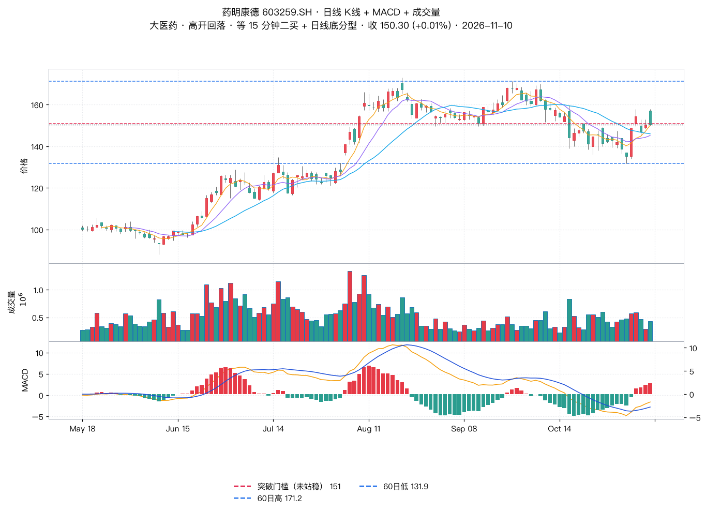
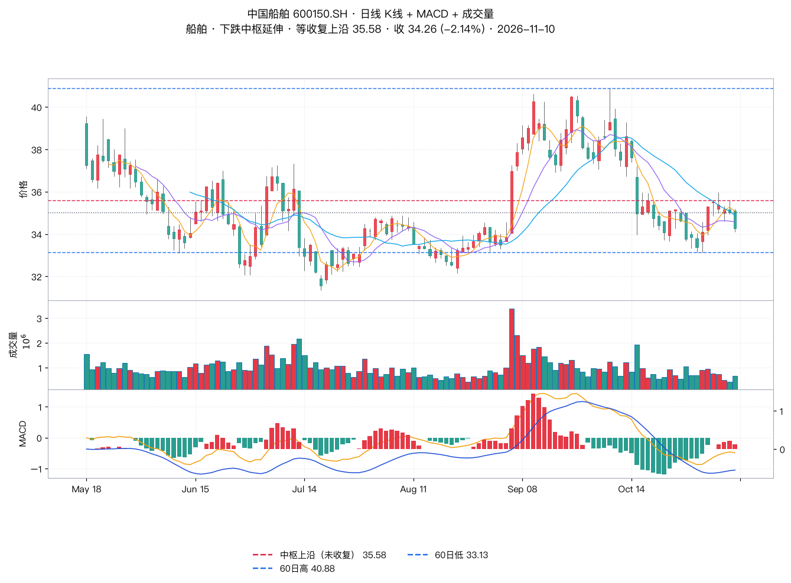
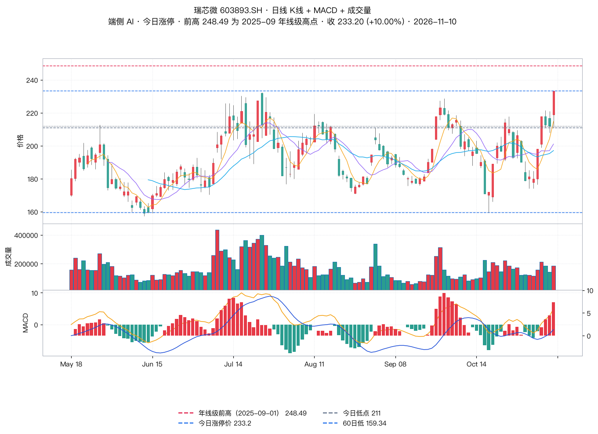
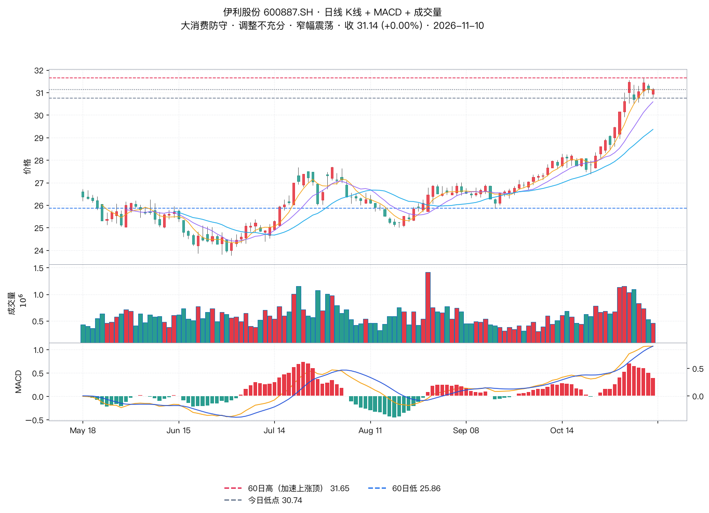
| 标的 | 题材 | 收盘 | 老师定性 | 15 分钟中枢（实测） | 关键位 / 止损 | 动作 |
|---|---|---|---|---|---|---|
| 江波龙 301308 | 存储 | 220.93 (+2.49%) | 无买点，既没创新低也没共振机会，短线剔除跟踪 | 215.52–219.53 末笔向下（11-09 15:00，力度 5.5） |
未离场同学：重新设止损点 208 后酌情参考选择 实测：今日最低 219.54，未创新低（11/09 低 215.52），止损未触发 |
剔除跟踪 / 守 208 |
| 兆易创新 603986 | 存储 | 244.57 (+2.58%) | 无买点，近期创新低 | 238.2–247.85 末笔向上（11-10 09:45，力度 11.6） |
观察底背驰 + 日线有力度底分型，或突破 15 分钟下跌中枢后的三买 实测：11/09 低 237.28 为近期新低，今日反弹至 248.88 后收 244.57 |
等条件 |
| 海天瑞声 688787 | 人形机器人 | 136.30 (+8.00%) | 无买点，结构维持震荡、弱势不追涨 | 125.85–128.98 末笔向上（11-10 10:15，力度 12.75） |
走势临近前高 155.50，不建议快速突破时追涨，一般建议做出共振结构后再考虑 实测：155.50 = 10/26 的 60 日最高；今日最高 138.00，141 门槛仍未过 |
先观察 |
| 华策影视 300133 | AI 视频 | 11.29 (+16.39%) | 走势出不了三买直接上冲，无买点，短线建议放弃、剔除跟踪 | 9.69–9.77 末笔向下（11-09 15:00，力度 0.75） |
不追涨；该位置放大量后无法离开中枢再被拉回，基本就是短期高点 实测：最高 11.64 = 涨停价（9.70×1.2）触及未封住，成交 36.69 亿 = 昨日的 2 倍 |
放弃 / 剔除跟踪 |
| 云铝股份 000807 | 非热点 / 震荡 | 23.72 (-4.62%) | 震荡向下，无法满足方法买点 | 24.8–25.09 末笔向上（11-09 10:00，力度 0.64） |
等向上突破 25.91 后出 15 分钟底分型回抽确认的三买 实测：今日最高 25.08 未达 25.91，全天下行收 23.72（-4.62%） |
等条件 |
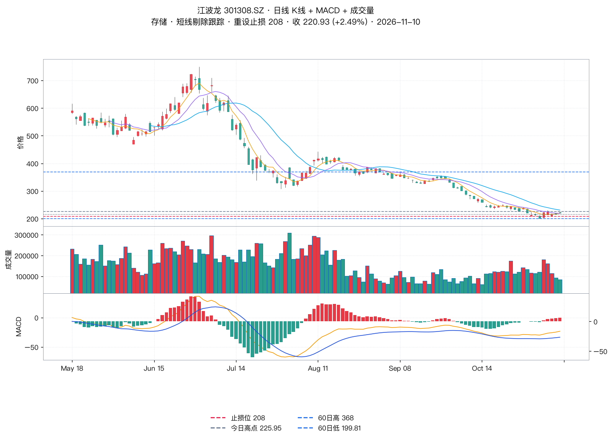
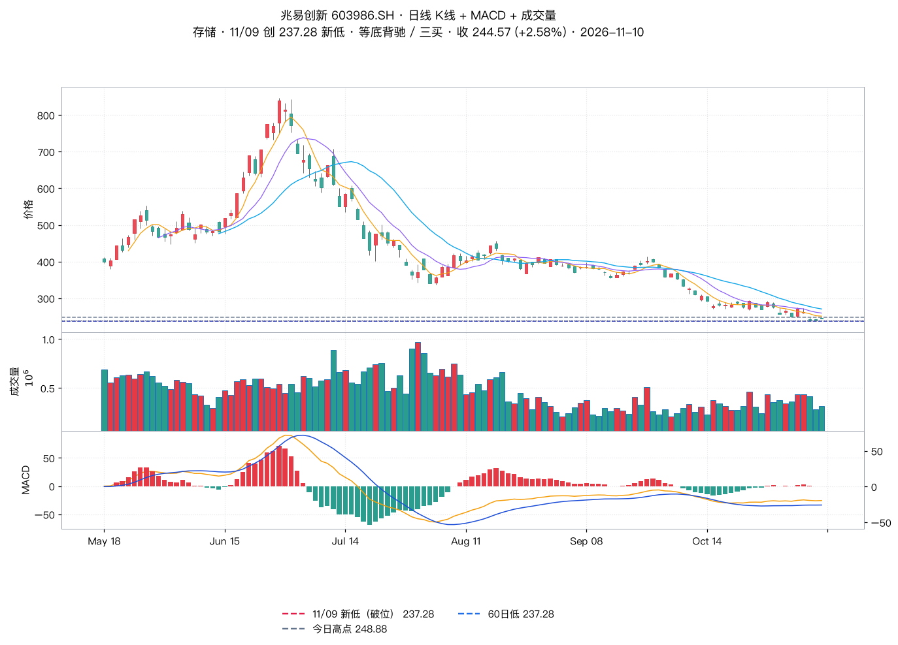
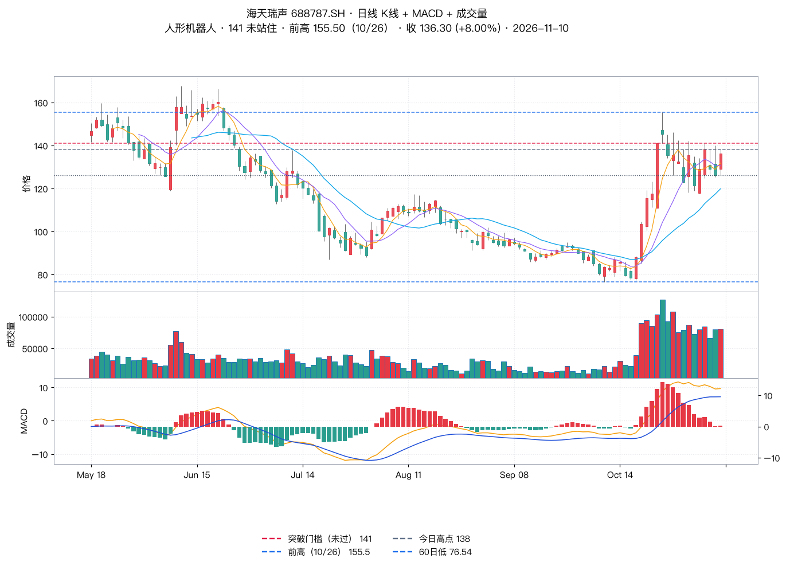
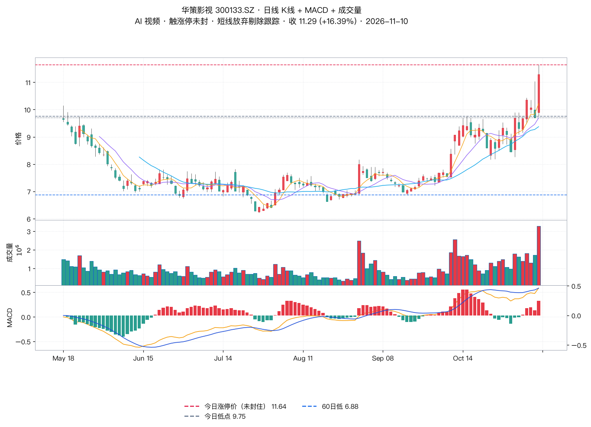
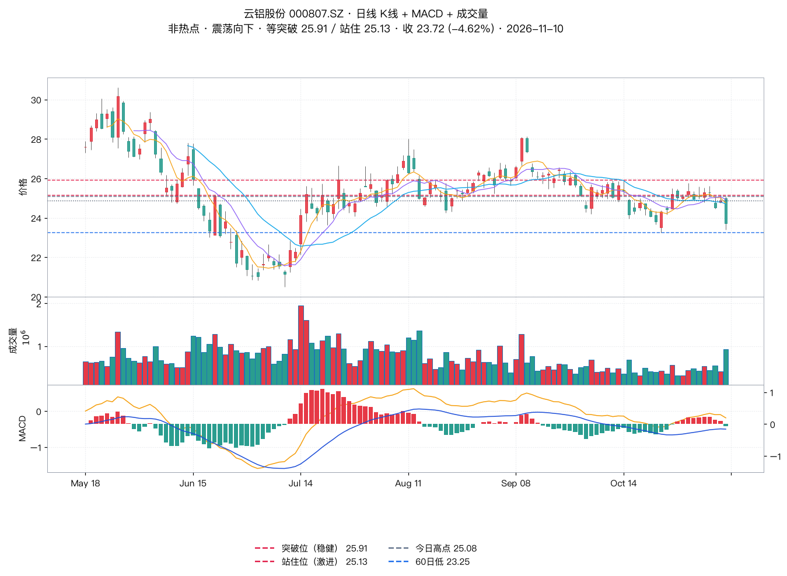
老师布置：AI 视频相关的万兴科技（300624）与中文在线（300364），可先跟踪思考选取哪个纳入跟踪，明日公布结果，注意个股不是直接去买。下表为同日收盘的实测对比。
| 维度 | 万兴科技 300624 | 中文在线 300364 |
|---|---|---|
| 11/10 收盘 | 53.04 (+3.17%) | 29.05 (+8.07%) |
| 当日区间 | 50.51 – 54.63 | 26.53 – 29.83（触及涨停价后回落） |
| 成交额 / 总市值 | 14.83 亿 / 102.5 亿 | 46.44 亿 / 211.6 亿 |
| 距 60 日高 | -11.3%（60 日高 59.77） | -2.8%（60 日高 29.90） |
| 60 日 / 10 日 / 5 日涨幅 | -5.2% / +10.5% / +18.6% | +15.2% / +23.9% / +18.1% |
| MACD | 金叉，DIF -0.13 仍在零轴下 | 金叉，DIF 0.76 已上零轴 |
| 概念主线 | AI 视频（最纯正）、VR、数字人、AIGC、Kimi | 文字媒体、短剧互动游戏、数字媒体、AI 语料、快手 |
| 15 分钟中枢（实测） | 50.51–54.63 末笔向上（11-10 11:00，力度 4.12） | 25.65–27.5 末笔向下（11-10 13:30，力度 1.42） |
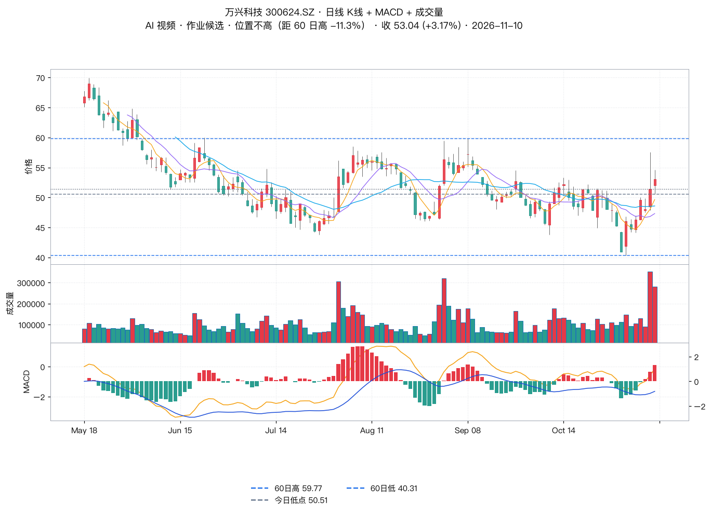
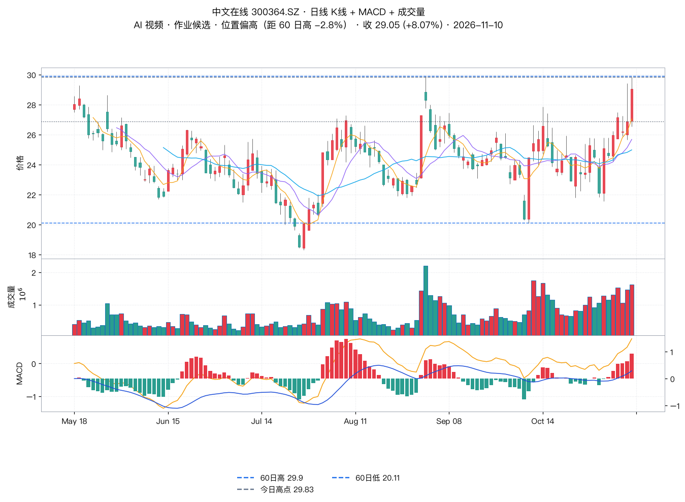
| 名称 | 代码 | 收盘 | 涨跌幅 | 60 日涨幅 | 距 60 日高 | 近 5 日涨幅 | 量比(今/5日均) |
|---|---|---|---|---|---|---|---|
| 华体科技 | 603679.SH | 18.41 | +9.98% | -18.2% | -32.5% | 15.4% | 1.34 |
| 智微智能 | 001339.SZ | 63.39 | +9.99% | -23.4% | -28.2% | 22.1% | 0.93 |
| 亿道信息 | 001314.SZ | 42.55 | +10.01% | -23.5% | -27.5% | 18.6% | 1.2 |
| 天普股份 | 605255.SH | 55.46 | +10.00% | -21.2% | -27.0% | 17.7% | 1.92 |
| 香山股份 | 002870.SZ | 39.83 | +10.00% | 2.2% | -25.5% | 16.0% | 1.73 |
| 科瑞思 | 301314.SZ | 50.7 | +20.00% | 41.7% | -25.4% | 15.0% | 1.33 |
| 瀛通通讯 | 002861.SZ | 13.02 | +9.97% | -20.2% | -24.1% | 16.5% | 0.99 |
| 赛腾股份 | 603283.SH | 40.23 | +10.01% | -8.3% | -23.9% | 23.4% | 1.18 |
| 联创电子 | 002036.SZ | 5.68 | +10.08% | -21.2% | -23.6% | 12.7% | 2.06 |
| 大业股份 | 603278.SH | 15.1 | +9.98% | 55.8% | -23.2% | -4.5% | 1.11 |
| 林州重机 | 002535.SZ | 2.82 | +10.16% | 11.5% | -21.2% | 9.3% | 0.73 |
| 龙版传媒 | 605577.SH | 17.28 | +9.99% | 80.0% | -18.8% | 20.8% | 1.08 |
| 嘉立创 | 001232.SZ | 174.78 | +10.00% | 3.4% | -16.6% | 16.7% | 1.17 |
| 中捷资源 | 002021.SZ | 2.37 | +10.23% | -14.1% | -16.3% | 9.7% | 2.64 |
| 协和电子 | 605258.SH | 39.56 | +10.01% | 56.2% | -16.2% | 12.3% | 0.72 |
| 慈文传媒 | 002343.SZ | 9.33 | +10.02% | 77.4% | -14.3% | 12.4% | 0.6 |
按「剔除涨幅大、保留位置不高」筛出的低位置候选：华体科技（光学光电，60 日 -18.2%、距 60 日高 -32.5%）、智微智能（计算机设备，60 日 -23.4%、距高 -28.2%）、亿道信息（消费电子，60 日 -23.5%、距高 -27.5%）、天普股份（汽车零部件，60 日 -21.2%、距高 -27.0%）、瀛通通讯（消费电子，60 日 -20.2%）、赛腾股份（自动化设备，60 日 -8.3%）、联创电子（光学光电，60 日 -21.2%）。位置偏高需剔除：光洋股份（60 日 +126.7%）、上海电影（+130.0%）、襄阳轴承（+112.8%）、冰山冷热（+108.9%）、龙版传媒（+80.0%）、慈文传媒（+77.4%）、国光电器（+30.5%）、掌阅科技（+45.8%）。
老师原话：港股因无涨跌幅限制，操作建议设止损；流动性不好，大资金慎入。香港市场暂无个股推荐，先耐心观察等待。
| 项目 | 老师原文 | 实测数据 | 判定 |
|---|---|---|---|
| 指数走势 | 运行比较沉闷，弱势震荡 | 上证 +0.08% 收 3663.72，高开 3682.04 → 尾盘贴近日内低 | 一致 |
| 成交量持续缩量 | 成交量持续缩量 | 两市 15049 亿 vs 前日 14826 亿（+1.5%），但沪市 6740 亿缩量、深市 8309 亿放量；上午至 10:30 同比 -4.9% | 口径需分（沪缩深放） |
| 15 分钟下跌中枢 | 15 分钟维持下跌中枢 | 3664.40–3689.91，收盘 3663.72 已跌破下沿 0.68 点 | 一致（且已破位） |
| 1 分钟结构不一 | 上证 1 分钟上涨中枢，深成创业 1 分钟下跌中枢 | 上证 3664.99–3668.01、深成 11252.34–11266.14、创业板 2496.90–2501.10，三者收盘均在各自中枢下沿外 | 一致 |
| 市场温度 25 度 | 市场温度 25 度 | 涨 4273 / 跌 1149，中位 1.313%，涨停 93 家、跌停 0 家（较 11/09 的 2242/3148 明显改善） | 数量口径偏保守 |
| 人形机器人 / 文化传媒相对强 | 人形机器人和文化传媒相对强 | 人形机器人 +3.70%（主力 +57.7 亿）、传媒 +4.53%（主力 +46.9 亿） | 一致 |
| 光伏设备略弱 | 光伏设备略弱 | 光伏设备 +1.44%，主力净流出，涨幅垫底 | 一致 |
| 玄学链不作为重点推荐 | 羊字辈→东方字样不作为重点推荐，操作难度大 | 涨停由 8 只收敛到 4 只，全部 3 连板以上高位；羊字辈走弱 | 一致 |
| AI 视频两中枢向上 | 内部走势是两中枢向上，需观察顶背驰 | 中枢 956.47–1002.72 → 987.64–1002.72 → 987.64–1033.38；末笔力度 54.98 < 前笔 76.91（衰减 28.5%） | 一致（顶背驰要素已具备） |
| 端侧 AI 强于超跌线 | 端侧 AI 这条线表现比超跌线强 | 端侧载体 +3.3%~+6.1% vs 算力概念 +2.60%、CPO 10 日 -4.63% | 一致 |
| 瑞芯微 248.49 | 回抽确认高点 248.49 元的三买机会 | 248.49 = 2025-09-01 历史高点（周线级），现价 233.20 距其 +6.5% | 一致（年线级压力） |
| 海天瑞声 155.5 | 走势临近前高 155.5 元 | 155.50 = 10/26 的 60 日最高；今日收 136.30，距前高 12.3%，141 门槛未过 | 价位准确，「临近」偏松 |
| 中国船舶上沿 | 等收复上沿后做共振上涨中枢 | 最高 35.20 < 上沿 35.58，未收复 | 一致 |
| 华策影视放弃 | 出不了三买直接上冲无买点，短线放弃 | 最高 11.64 = 涨停价未封住，收 +16.39%，成交 36.69 亿（昨 17.65 亿的 2.1 倍） | 一致 |
| 江波龙剔除跟踪 | 既没创新低也没共振，短线剔除跟踪 | 今日低 219.54 未创新低（11/09 低 215.52） | 一致 |
| 云铝 25.91 | 等向上突破 25.91 后出底分型回抽三买 | 最高 25.08 未达，全天收 23.72（-4.62%） | 一致 |
| 潜在强势股清单 | 只给筛选逻辑，未列标的 | 本纪要用涨停池 + 位置数据补做 | 原文缺清单 |
| 作业题答案 | 万兴科技 vs 中文在线，明日公布 | 本纪要按位置优先口径倾向万兴科技（已标注为测算） | 待老师公布 |
原文来源：都业华《高级班》2026-11-10 收评及当日盘中快评（十点看盘 / 两点看盘 / 午评），执业编号 A0400626100004。以上内容仅供参考，不作为买卖依据，据此操作风险自担。投资有风险，入市需谨慎！历史案例不代表未来收益。
本纪要为原文的结构化整理 + 独立数据核验，核验结论基于公开行情数据计算，不构成任何投资建议。